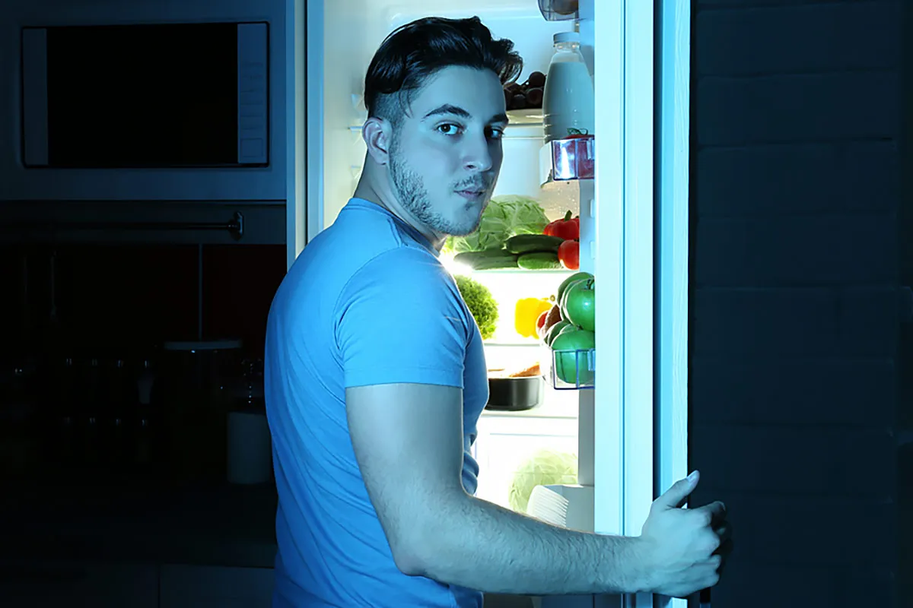
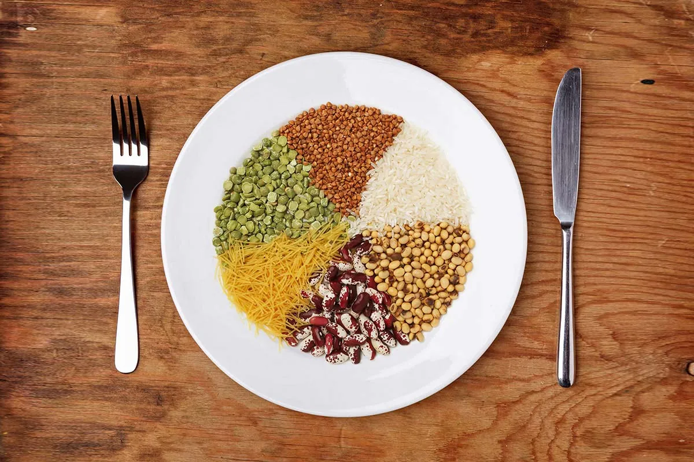
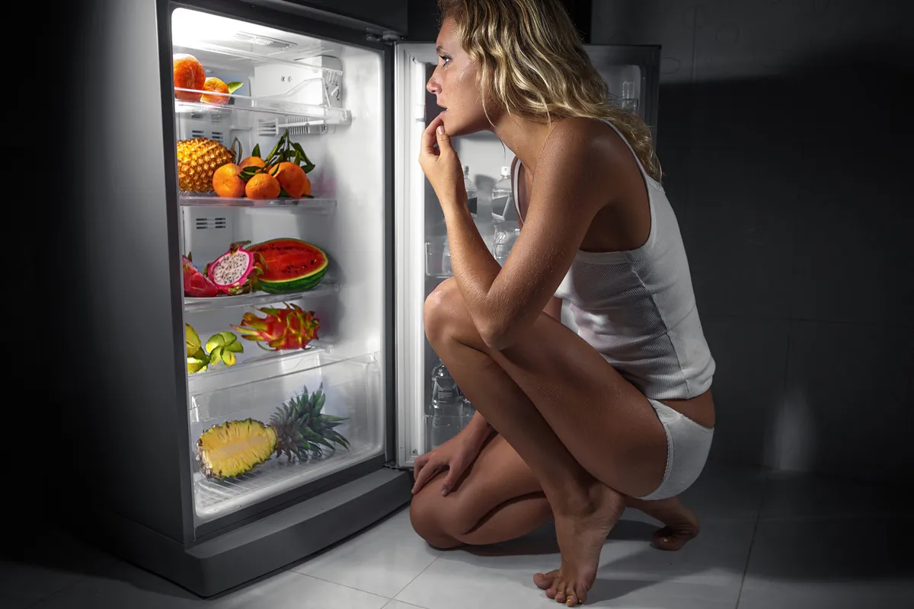

Однако исследования говорят о том, что, в конечном итоге, роль играет суммарная калорийность питания — люди, ужинающие в ночное время, обычно хуже контролируют калории и общую правильность рациона. За сколько часов до сна можно ужинать — и каков должен быть размер порции?
За сколько часов до сна нужно есть?
 Во время сна скорость обмена веществ снижается примерно на 15-35%, уровень глюкозы (и инсулина) в крови падает, а уровень жиросжигающих гормонов растет¹. Также в ночное время в процесс метаболизма активно включается гормон голода лептин, вырабатывающийся в жировой ткани.По сути, ночью тело активно использует существующий жир в качестве топлива — тогда как наличие пищи в желудке вносит определенный дисбаланс, заставляя организм в первую очередь сжигать калории только что съеденного ужина. При этом чем больше простых углеводов было в еде, тем хуже.
Еще один интересный факт — хотя пробуждение от ночного сна и поход к холодильнику встречается лишь у 1-2% населения, для 25% страдающих ожирением людей это вполне нормальное явление². Служа подтверждением того, что привычка ужинать в позднее время приводит к набору веса.
В какое время лучше ужинать?
Биологические часы человека тесно связаны с ритмами смены дня и ночи. Именно поэтому яркость света влияет не только на уровень гормона сна мелатонина, но и на многие другие параметры метаболизма. К примеру, в темное время работа пищеварительной системы и желудка ощутимо замедляется.Однако крайне сложно назвать конкретный час, в который начинаются эти изменения. Помимо прочего, оптимальное время для ужина зависит как от продолжительности светового дня, так и от непосредственного времени отхода ко сну. Но чаще всего ужинать рекомендуются не позднее 7-9 часов вечера.
Опасности и вред еды на ночь
 Ключевая проблема «вечерних калорий», по мнению диетологов, заключается в банальном переедании — а вовсе не во времени употребления еды. Если у человека не было возможности нормально позавтракать и пообедать, то к ужину он сильно проголодается — и, в итоге, съест больше калорий, чем нужно организму.К сожалению, это типичный случай. Для большинства работящих людей именно вечер становится главным приемом пищи за день — а многие не могут позволить ужинать за 3-4 часов до сна. Ситуация усугубляется и тем, что попытки уменьшить размер съедаемых вечером порций часто выливаются в неконтролируемое ночное обжорство.
Как избежать обжорства?
Существуют несколько советов, помогающих меньше есть. Прежде всего, помните о том, что насыщение от еды приходит лишь через 15-20 минут — то есть, принимать пищу необходимо медленно и осознанно (например, без одновременного просмотра телевизора или прокрутки ленты инстаграмма).Кроме этого, вечером необходимо особенно пристально следить за питательным составом еды — сокращая простые углеводы и насыщенные животные жира, и заменяя их на источники клетчатки и всевозможные растительные жиры. Это поможет сформировать стабильное чувство насыщения.
Что можно есть перед сном?
 Поскольку во время сна тело работает преимущественно на свободных жирных кислотах, качество употребляемых на ужин масел и жиров играет решающую роль. Важно максимально ограничить насыщенные животные жиры (масло, сало), а также отказаться от рафинированного растительные масла.С точки зрения КБЖУ, правильное питание на ужин — это порция в 450-500 ккал, содержащая примерно 25-35 г протеина, 15-25 г жиров (преимущественно полезных омега-9 в виде оливкового масла) и 50-75 г углеводов (из которых 8-10 г клетчатки и не более 7 г сахаров).
Идеальным выбором перед сном будут 100-150 г нежирного мяса с гарниром из гречки (50-80 г) и большой порцией зеленых овощей, заправленных оливковым маслом. Однако съедите ли вы эту еду за 3 часа перед сном — или за 30 минут — в конечном счете, не имеет разницы.
С теоретической точки зрения, для организма нет разницы во времени употребления калорий — то есть, кушать можно даже непосредственно перед сном. Однако на практике люди, ужинающие слишком поздно в ночи, склонны переедать — за счет чего они и набирают лишний вес.